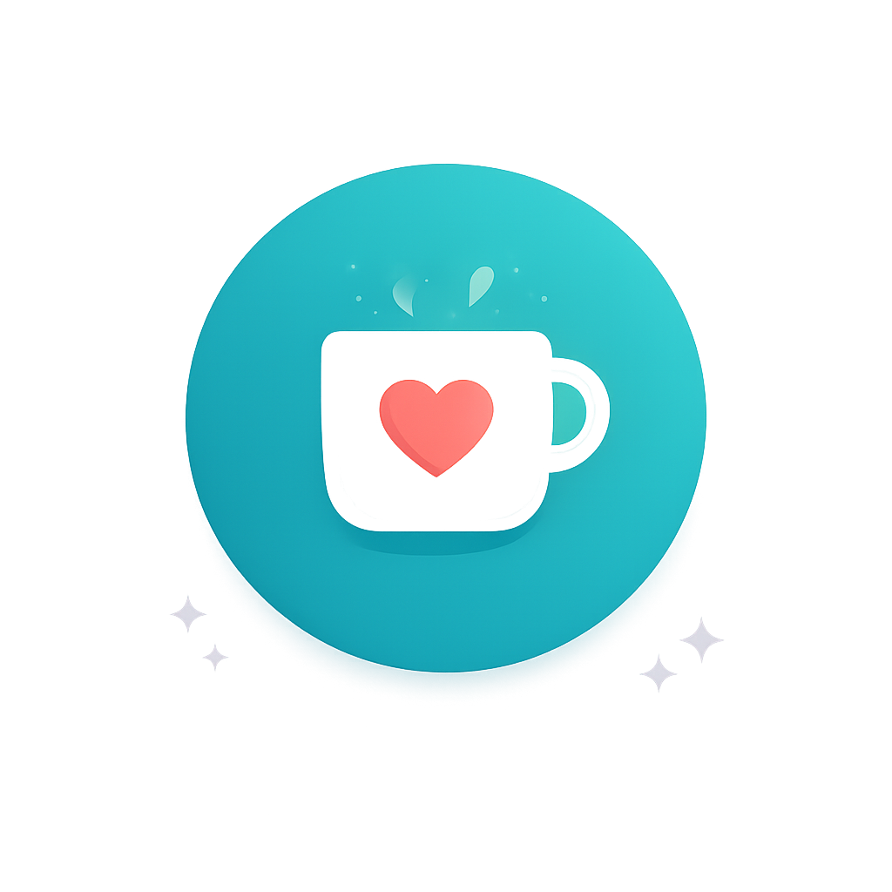
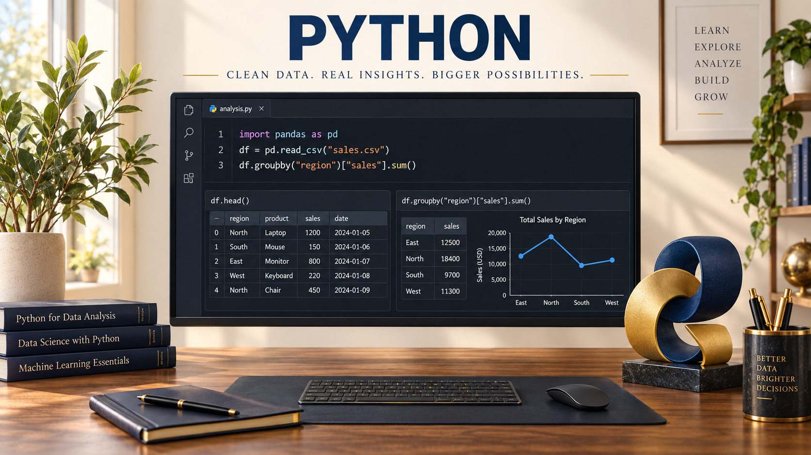
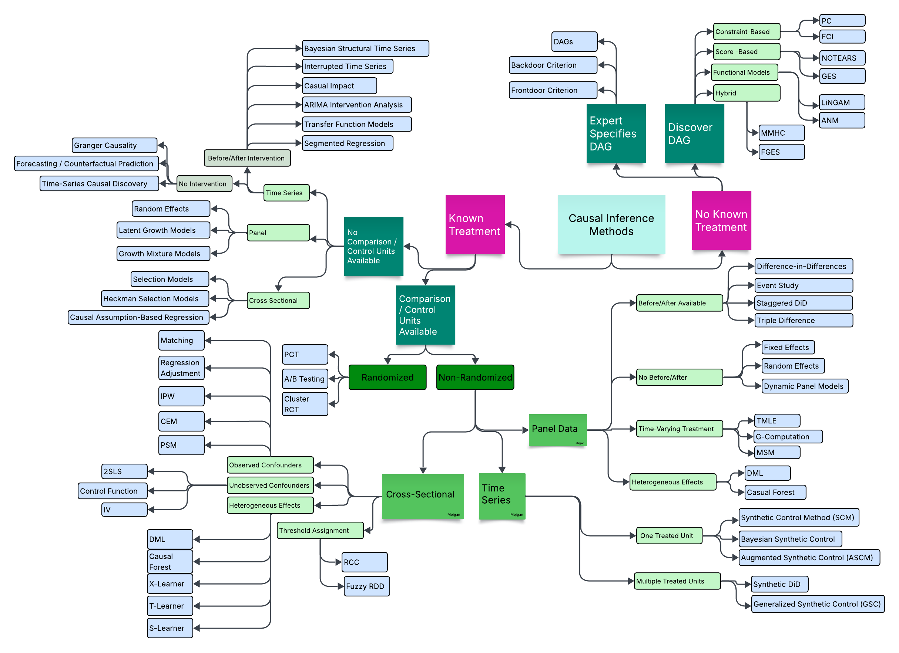
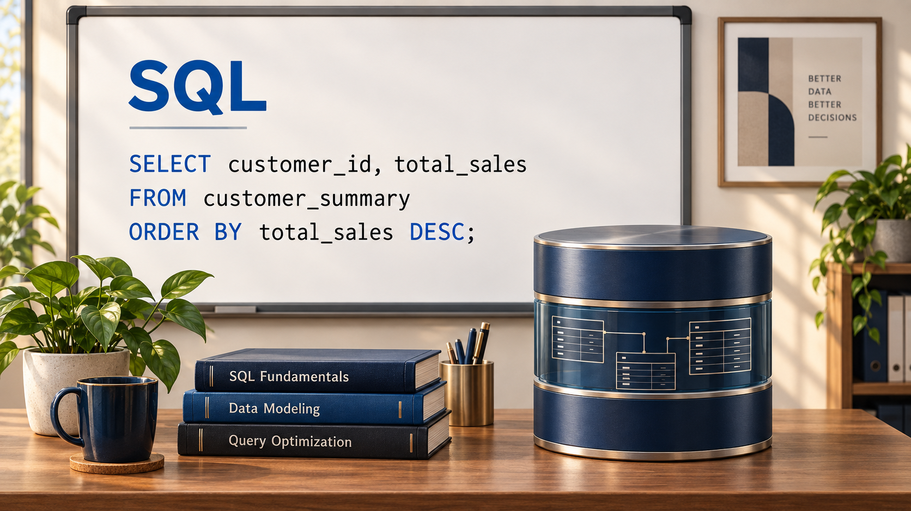
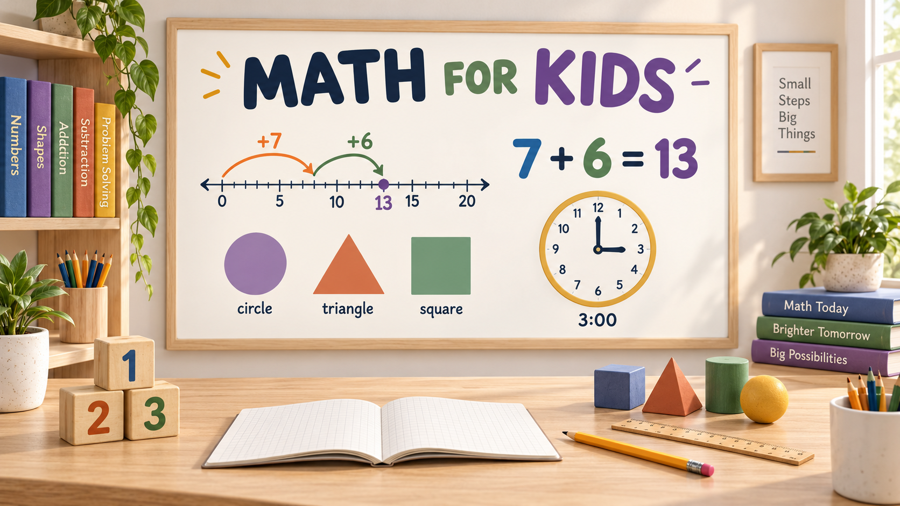

I combine commercial credit risk analysis, economics, and data analytics to help
organizations make informed decisions.
This site brings together selected policy, research, and analytics projects, along with
practical learning resources. I also help small businesses with websites, reporting, data
analysis, and simple tools that reduce manual work.
What I Can Help With
Commercial Credit Analysis
Financial statement analysis, credit risk assessment, and lending analysis.
Published and applied research across economics, data analytics, and public policy, focused on
turning complex data into clear, evidence-based insights.
A collection of games and interactive applications built using Python, R Shiny, and JavaScript,
ranging from small tools to data-driven projects.
Forthcoming
Teaching & Learning Resources
Knowledge, shared openly.
Tutorials, reference materials, and interactive tools across data analytics, early math, and
economics of innovation — built from years of teaching and practice.

Find these resources useful?
Support my work
💜
Your support helps
me create more free tutorials and tools for students and educators around the world. Every
coffee makes a difference!
🔒 Secure Safe &
encrypted⚡ Quick Takes less than a
minute🌐 Global Support from
anywhere
Learn how to assess commercial borrowers through financial statement
analysis, cash-flow and repayment capacity, collateral, industry risk,
and credit recommendations.
Credit Analysis
Commercial Banking

Analytics & Data Science
Analytics & Data Science
Learn the complete data analytics workflow with Python - from data cleaning and
exploration to statistical analysis, econometrics, machine learning, causal inference,
visualization, and SQL-based data extraction.
Data Analysis
Machine learning

Causal Inference
Causal Inference Methods Taxonomy
Explore an interactive decision tree for selecting causal inference methods.
Start with whether treatment is known, then follow the available research
design, comparison units, data structure, and causal assumptions.
Method selection

SQL
SQL - Beginner to Expert
A complete reference covering core syntax, joins, window functions,
indexing, and performance tuning — organized by skill level with video.
Beginner
→ ExpertReference
tableVideo
Excel
Excel Dashboard Walkthroughs
Pivot tables, Power Query, conditional formatting, and building
interactive dashboards from raw data.
IntermediateComing
soon
Power BI
Power BI for Analysts
Building interactive reports, writing DAX measures, and designing
dashboards for business intelligence.
IntermediateComing
soon

Math for Kids
Math Activities — Grades 1 & 2
Playful, visual activities to build number sense, counting, addition,
subtraction, and patterns for young learners.
Grade
1–2Interactive
gamesComing
soon
Economics & Finance
Economics & Finance
Explore practical and theoretical concepts across economics, finance, and risk,
from economic foundations and innovation to financial analysis and credit risk.
Economics
Finance & Risk
Newest first
My Journey
From typing and Excel analysis as a bachelor’s student, to credit risk, research and
teaching, to data science today. Each step forward takes you one step back in time.
01 / 15Drag · scroll · ← →
Timeline
Bars stacked above each other ran at the same time. Click a bar, or drag the orange line through time.